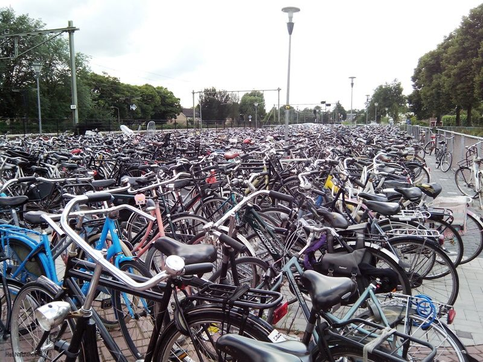

Fietsenstallingen
Dit is een faketekst. Alles wat hier staat is slechts om een indruk te geven van het grafische effect van tekst op deze plek. Wat u hier leest is een voorbeeldtekst. Deze wordt later vervangen door de uiteindelijke tekst, die nu nog niet bekend is. De faketekst is dus een tekst die eigenlijk nergens over gaat. Het grappige is, dat mensen deze toch vaak lezen. Zelfs als men weet dat het om een faketekst gaat, lezen ze toch door. Dit is een faketekst. Alles wat hier staat is slechts om een indruk te geven van het grafische effect van tekst op deze plek. Wat u hier leest is een voorbeeldtekst. Deze wordt later vervangen door de uiteindelijke tekst, die nu nog niet bekend is. De faketekst is dus een tekst die eigenlijk nergens over gaat. Het grappige is, dat mensen deze toch vaak lezen. Zelfs als men weet dat het om een faketekst gaat, lezen ze toch door. Dit is een faketekst. Alles wat hier staat is slechts om een indruk te geven van het grafische effect van tekst op deze plek. Wat u hier leest is een voorbeeldtekst. Deze wordt later vervangen door de uiteindelijke tekst, die nu nog niet bekend is. De faketekst is dus een tekst die eigenlijk nergens over gaat. Het grappige is, dat mensen deze toch vaak lezen. Zelfs als men weet dat het om een faketekst gaat, lezen ze toch door. Dit is een faketekst. Alles wat hier staat is slechts om een indruk te geven van het grafische effect van tekst op deze plek. Wat u hier leest is een voorbeeldtekst. Deze wordt later vervangen door de uiteindelijke tekst, die nu nog niet bekend is. De faketekst is dus een tekst die eigenlijk nergens over gaat. Het grappige is, dat mensen deze toch vaak lezen. Zelfs als men weet dat het om een faketekst gaat, lezen ze toch door.